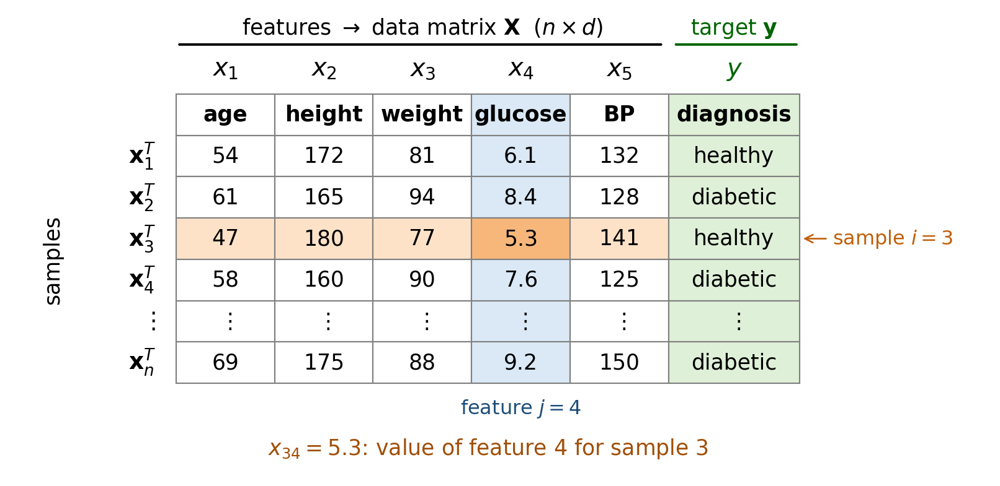
Main machine learning tasks
- Classification. Labelled samples (known categories) are used to train the algorithm, which then identifies the class an unknown input belongs to; its output space is a set of discrete classes.
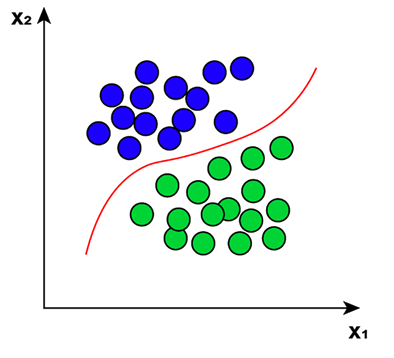
Introduction to Artificial Intelligence and Machine Learning 4
Jiabao.Xu@glasgow.ac.uk
massimo.vassalli@glasgow.ac.uk
Machine Learning (ML) is tightly connected to the field of Data Mining (DM).
ML developers, like DM scientists, use analytics processes to extract useful information and patterns from large datasets. Both fields leverage statistical and computational techniques to analyse data.
ML emphasises building predictive models that can generalise to new, unseen data, while DM focuses on discovering previously unknown patterns and relationships within existing data. In DM, the rules or patterns are unknown at the start of the process, whereas with ML the machine is usually given some rules or variables to understand the data and learn autonomously.
DM applies to existing datasets (like a data warehouse) to find patterns, while ML is trained on a known dataset, which teaches the computer how to make sense of data, and then to make predictions about new datasets.
The work of the ML scientist can be inspired by the DM process.
The Cross-Industry Standard Process for Data Mining (CRISP-DM) is an open, widely used framework and methodology for guiding data mining and data science projects.
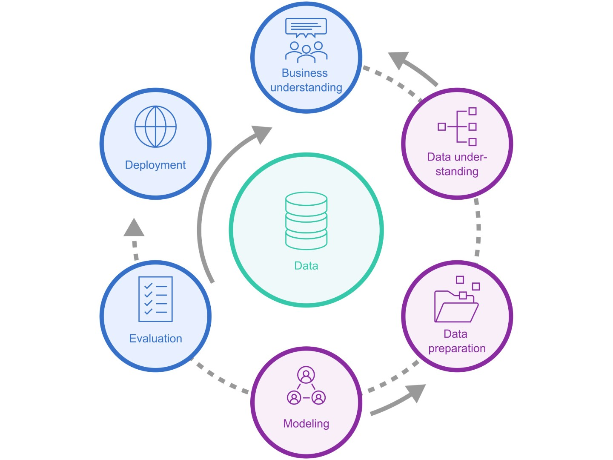
The process to create an ML application is very similar to the work of the Data Mining scientist, and the CRISP-DM framework applies quite directly to guide the ML analyst.
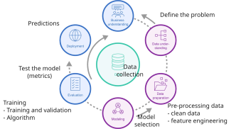
Tip
Keep this cycle in mind: the coursework reports are assessed on how well you go through each of these steps (problem understanding, data understanding, preparation, modelling, evaluation), not only on the final score of the model.
Machine Learning, like data analytics, starts from data. The modern ML workflow relies on collecting, organising, and understanding data before building models.
Data can be structured (tables, spreadsheets), semi-structured (JSON, XML), or unstructured (text, images, audio). The type of data influences the modelling approach and the algorithms used.
Quantitative data can be divided into two categories: continuous (sometimes also called analog) data and discrete data (digital data are discrete).
Data can also be classified by their level of measurement: nominal (categories without order, e.g. colours), ordinal (ordered categories, e.g. small / medium / large), interval (numbers with an arbitrary zero, e.g. temperature in °C), ratio (numbers with a true zero, e.g. mass). Binary data (Yes/No, 0/1, True/False) are a special case of nominal data.
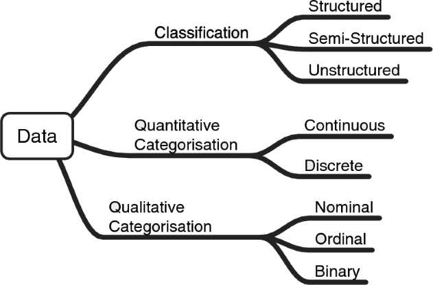
The approach of a data scientist and an ML specialist is typically to define data-driven models. These models use observed data to infer relationships, make predictions, or uncover patterns. In contrast, first-principle models are based on fundamental laws or equations (such as physics or chemistry) and do not rely primarily on empirical data.
Data-based modelling uses statistical and computational techniques to build models that capture the underlying structure of the data. These models can be descriptive (summarising data), predictive (forecasting outcomes), or prescriptive (suggesting actions).
A key disadvantage of data-based modelling is its limited ability to incorporate natural laws or domain-specific knowledge. Unlike first-principle models, which are grounded in established scientific theories, data-based models may overlook fundamental relationships and constraints, potentially leading to less interpretable or physically inconsistent results.
The success of data-based modelling depends on the quality and quantity of data, as well as on the suitability of the chosen algorithms and evaluation metrics.
Note
In engineering the two approaches are increasingly combined: hybrid (or physics-informed) models use first principles to constrain the model and data to learn what the equations do not capture.
Whatever their origin, data enter an ML algorithm as a table: each row is a sample (an observation, described by its feature vector) and each column is a feature. In supervised learning, one extra column holds the target (or label) we want to predict. This is also how a well-organised CSV file looks: one header row with the names, one row per sample.

Note
Feature extraction is the process of turning raw data (sensor signals, images, text, …) into this table. Scikit-learn provides tools for text and images in sklearn.feature_extraction. The full notation is summarised at the end of the lecture.
The collected data might need to be prepared for a more efficient and meaningful use by the ML algorithms.
Data pre-processing encompasses all the steps that generate a meaningful dataset from a set of raw data. Meaningful are all processes that maintain and, if possible, increase the interpretability of the data.
Note
Pre-processing steps are implemented as transformations in sklearn. Module sklearn.preprocessing. We will cover them in detail in Lecture 3b.
A small, invented clinical dataset, as it might arrive from a hospital database. Would you feed it to a model as it is?
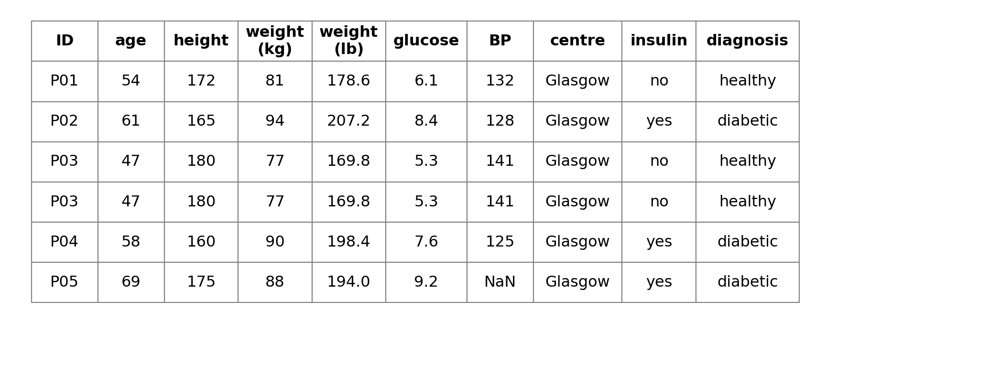
Raw tables usually contain columns (and rows) that should not reach the model. Spotting them requires looking at the data and understanding where they come from.
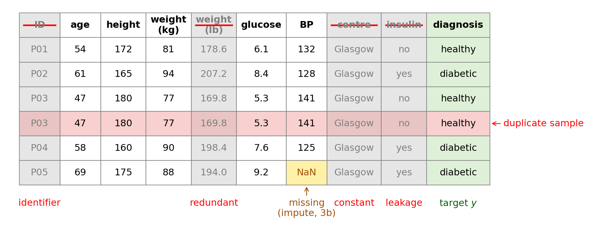
Identifier: unique per sample, carries no information (but the model can memorise it). Redundant: the same information twice. Constant: zero variance, nothing to learn. Leakage: a consequence of the target, not available when making a prediction. Duplicate samples inflate the data and can end up in both training and test sets.
Tables are usually stored as CSV files and loaded into a pandas DataFrame: one row per sample, one column per variable, with the column names from the header.
import io
import pandas as pd
csv = """patient_id,age,height_cm,weight_kg,weight_lb,glucose,bp,centre,insulin,diagnosis
P01,54,172,81,178.6,6.1,132,Glasgow,no,healthy
P02,61,165,94,207.2,8.4,128,Glasgow,yes,diabetic
P03,47,180,77,169.8,5.3,141,Glasgow,no,healthy
P03,47,180,77,169.8,5.3,141,Glasgow,no,healthy
P04,58,160,90,198.4,7.6,125,Glasgow,yes,diabetic
P05,69,175,88,194.0,9.2,,Glasgow,yes,diabetic"""
raw = pd.read_csv(io.StringIO(csv)) # in practice: pd.read_csv("file.csv")
raw| patient_id | age | height_cm | weight_kg | weight_lb | glucose | bp | centre | insulin | diagnosis | |
|---|---|---|---|---|---|---|---|---|---|---|
| 0 | P01 | 54 | 172 | 81 | 178.6 | 6.1 | 132.0 | Glasgow | no | healthy |
| 1 | P02 | 61 | 165 | 94 | 207.2 | 8.4 | 128.0 | Glasgow | yes | diabetic |
| 2 | P03 | 47 | 180 | 77 | 169.8 | 5.3 | 141.0 | Glasgow | no | healthy |
| 3 | P03 | 47 | 180 | 77 | 169.8 | 5.3 | 141.0 | Glasgow | no | healthy |
| 4 | P04 | 58 | 160 | 90 | 198.4 | 7.6 | 125.0 | Glasgow | yes | diabetic |
| 5 | P05 | 69 | 175 | 88 | 194.0 | 9.2 | NaN | Glasgow | yes | diabetic |
Most of the problems we spotted by eye can be detected with a few lines of code.
print("shape :", raw.shape)
print("duplicate rows :", raw.duplicated().sum())
print("missing values :", raw.columns[raw.isna().any()].tolist())
print("constant :", [c for c in raw if raw[c].nunique() == 1])
print("identifier-like:", [c for c in raw.select_dtypes(exclude="number")
if raw[c].nunique() == len(raw.drop_duplicates())])
corr = raw.drop_duplicates().select_dtypes("number").corr().abs()
print("redundant pairs:", [(a, b) for a in corr for b in corr
if a < b and corr.loc[a, b] > 0.99])shape : (6, 10)
duplicate rows : 1
missing values : ['bp']
constant : ['centre']
identifier-like: ['patient_id']
redundant pairs: [('weight_kg', 'weight_lb')]Warning
Leakage cannot be detected automatically: nothing in the numbers says that insulin is prescribed because of the diagnosis. Only knowledge of the problem (and of how the data were collected) reveals it. A model with leaked features looks excellent on the test set and fails in practice.
X and yAfter cleaning, we select the features, possibly engineer new ones, and separate the target.
X: (5, 6) y: (5,)
age height_cm weight_kg glucose bp bmi
0 54 172 81 6.1 132.0 27.4
1 61 165 94 8.4 128.0 34.5
2 47 180 77 5.3 141.0 23.8
4 58 160 90 7.6 125.0 35.2
5 69 175 88 9.2 NaN 28.7Note
Feature engineering uses domain knowledge to build more informative features: BMI combines weight and height in the way physiology suggests. It is a simple way to inject first-principle knowledge into a data-driven model.
Note
Dropping columns by inspection is the most basic form of feature selection. Statistical methods to select features (filter, wrapper, embedded) are covered in Lecture 5b; the missing value is dealt with by imputation in Lecture 3b.
Once we have a clean table, the next question is: which features matter most for predicting the target?
Two simple tools give a first answer:
\[ r_j = \frac{\sum_{i=1}^{n}(x_{ij} - \bar{x}_j)(y_i - \bar{y})}{\sqrt{\sum_{i=1}^{n}(x_{ij} - \bar{x}_j)^2}\,\sqrt{\sum_{i=1}^{n}(y_i - \bar{y})^2}} \]
A real clinical dataset shipped with scikit-learn: 442 patients, 10 baseline features (age, sex, BMI, blood pressure, six blood serum measurements) and, as target, a measure of disease progression one year later.
(442, 11)| age | sex | bmi | bp | s1 | s2 | s3 | s4 | s5 | s6 | target | |
|---|---|---|---|---|---|---|---|---|---|---|---|
| 0 | 59.0 | 2.0 | 32.1 | 101.0 | 157.0 | 93.2 | 38.0 | 4.0 | 4.8598 | 87.0 | 151.0 |
| 1 | 48.0 | 1.0 | 21.6 | 87.0 | 183.0 | 103.2 | 70.0 | 3.0 | 3.8918 | 69.0 | 75.0 |
| 2 | 72.0 | 2.0 | 30.5 | 93.0 | 156.0 | 93.6 | 41.0 | 4.0 | 4.6728 | 85.0 | 141.0 |
| 3 | 24.0 | 1.0 | 25.3 | 84.0 | 198.0 | 131.4 | 40.0 | 5.0 | 4.8903 | 89.0 | 206.0 |
| 4 | 50.0 | 1.0 | 23.0 | 101.0 | 192.0 | 125.4 | 52.0 | 4.0 | 4.2905 | 80.0 | 135.0 |
Note
Scikit-learn includes several datasets for practice (load_iris(), load_wine(), load_digits(), load_diabetes(), …) in the module sklearn.datasets.
import matplotlib.pyplot as plt
features = [f for f in df.columns if f not in ("sex", "target")]
fig, axs = plt.subplots(3, 3, figsize=(6, 5.5), sharey=True)
for ax, f in zip(axs.flat, features):
ax.scatter(df[f], df["target"], alpha=0.15, s=5)
ax.set_xlabel(f)
for ax in axs[:, 0]:
ax.set_ylabel("progression")
plt.tight_layout()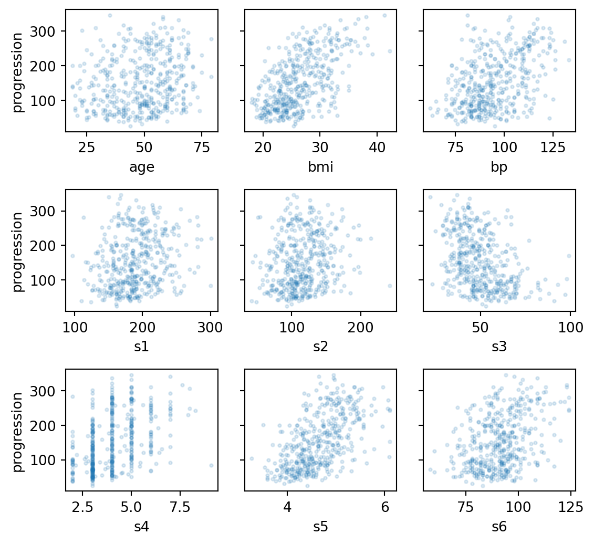
BMI, bp and s5 show a clear trend with progression, s3 a decreasing one, others look like clouds. Note also the very different ranges of the features on the horizontal axes.
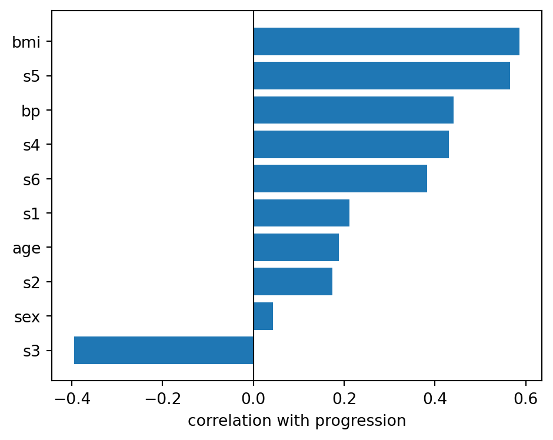
Note
BMI and s5 (a blood serum measurement) are the most correlated with the target: we will use BMI to build our first regression model in the next lecture. Correlation only captures linear relationships between pairs of variables: it is a first hint, not a feature selection method (Lecture 5b).
The plots showed features on very different scales: cholesterol (s1) spans hundreds of units, s5 only a few. Many algorithms compare or combine features numerically, and would give more weight to the features with larger values. Scaling puts all features on a comparable range, for example by standardisation: \(x_{ij} \rightarrow (x_{ij} - \bar{x}_j)/\sigma_j\).
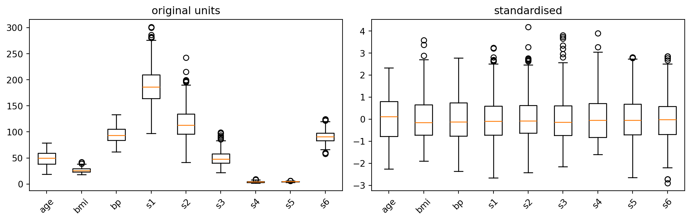
Warning
By default, load_diabetes() returns the features already scaled (mean-centred and normalised): this is the version we will use in Lecture 2b. Real datasets, including those of the coursework, do not arrive in this form. Scikit-learn scalers and their differences are covered in Lecture 3b.
Note
Scikit-learn is the “go-to” library for prototyping and learning ML: clean syntax, solid documentation, and wide adoption. The Getting Started page is a good 10-minute introduction.
Every object in scikit-learn follows the same small set of conventions, which is why the same few lines of code work for very different models.
Data
X: feature matrix, shape (n_samples, n_features)y: target vector, shape (n_samples,)Estimators (models)
fit(X, y): learn the parameters from datapredict(X): apply the model to new datascore(X, y): default performance metricTransformers (pre-processing)
fit(X): learn the transformation (e.g. mean and std)transform(X): apply itfit_transform(X): both in one stepLearned parameters end with an underscore, e.g. coef_, intercept_, mean_.
Important
fit is always called on the training data only. The test data are only ever passed to predict, transform or score.
In Lecture 1a we organised ML into applications, tasks, paradigms and frameworks. The highlighted boxes are the tasks we will address in this course.
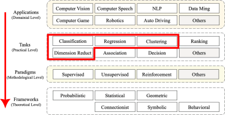

Classification. Labelled samples (known categories) are used to train the algorithm, which then identifies the class an unknown input belongs to; its output space is a set of discrete classes.
Regression. Labelled samples are used to estimate the regression function linking the variables, which is then used to predict new inputs; its output space is a set of real continuous numbers.
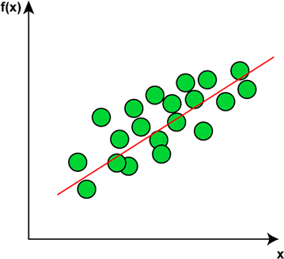
Classification. Labelled samples (known categories) are used to train the algorithm, which then identifies the class an unknown input belongs to; its output space is a set of discrete classes.
Regression. Labelled samples are used to estimate the regression function linking the variables, which is then used to predict new inputs; its output space is a set of real continuous numbers.
Clustering. Input data are divided into several clusters according to some criterion; the clusters are not known in advance, but data within the same cluster share some similarity.
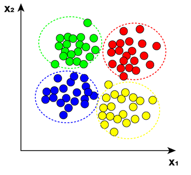
Classification. Labelled samples (known categories) are used to train the algorithm, which then identifies the class an unknown input belongs to; its output space is a set of discrete classes.
Regression. Labelled samples are used to estimate the regression function linking the variables, which is then used to predict new inputs; its output space is a set of real continuous numbers.
Clustering. Input data are divided into several clusters according to some criterion; the clusters are not known in advance, but data within the same cluster share some similarity.
Dimensionality reduction. Data are mapped from a high-dimensional space to a low-dimensional space while retaining the essential features of the original data.
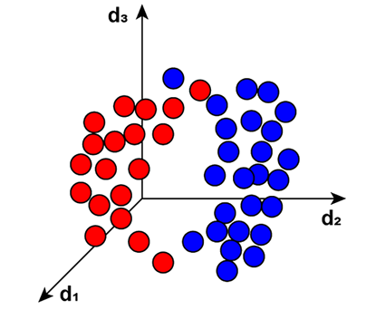
| Task | Paradigm | Lectures | Examples in scikit-learn |
|---|---|---|---|
| Regression | supervised | 2b, 3b, 4a, 6a, 6b, 7a | LinearRegression, Ridge, Lasso, DecisionTreeRegressor, SVR, RandomForestRegressor |
| Classification | supervised | 3a, 4b, 6a, 6b, 7a, 7b | LogisticRegression, DecisionTreeClassifier, SVC, RandomForestClassifier, KNeighborsClassifier |
| Dimensionality reduction | unsupervised | 5b | PCA, SelectKBest, RFE |
| Clustering | unsupervised | 7b | KMeans, AgglomerativeClustering, DBSCAN |
Ranking, association and sequential decision making are not covered. Neural networks (weeks 8-10) address regression and classification again, with a different family of models.
Note
Every scikit-learn estimator in this table follows the same API (fit, predict, score): once you have learned the pipeline with one model, changing model is often a single line of code.
Of the paradigms introduced in Lecture 1a, the course focuses on supervised and unsupervised learning (highlighted). Reinforcement learning is not covered.
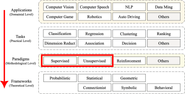
Supervised learning deals with the establishment of models \(f\) that map the input data \(\mathbf{x}\) to the results \(y\) associated with \(\mathbf{x}\), \(y = f^\infty (\mathbf{x})\). We assume the availability of \(y\) (the labels). This gives this type of learning its name: we control towards which result the learning process is trained.
Supervised learning of a model \(f\) describes the iterative change from \(f^{i}\) to \(f^{i+1}\), so that \(f^{i+1}\) is better at predicting \(y\) than \(f^{i}\) was, eventually converging towards an “optimal” \(f^{\infty}\).
Classification and regression tasks are typically presented in the form of supervised learning. Typical supervised learning methods include:
Note
Scikit-learn contains a wide selection of supervised learning methods.
To train a supervised learning model, we need sufficient and suitable training data. Sufficient, because we need enough examples to get the model close to \(f^{\infty}\). Suitable, because the data must always consist of pairs \((\mathbf{x}_i, y_i)\), where \(\mathbf{x}_i\) is the input (feature vector) and \(y_i\) the desired, ideal result (the target).
To establish a learning procedure, we split the dataset \(\mathcal{D}\) into two disjoint sets:
with \(n_{tr} + n_{te} = n\). In the code, we refer to these sets as X_train, y_train and X_test, y_test.
Golden rule for training learning methods: elements of the test set must never enter the training! The right choice of these sets is key to the quality of the learning: typically \(n_{tr} > n_{te}\) (e.g. 75% / 25%), and both sets must be statistically representative of the problem.
Note
Scikit-learn contains a function to automatically produce these sets from the data: train_test_split.
Unsupervised learning seeks to uncover structures in the data. Unlike supervised learning, there are no labels or target values. Only the data themselves are the starting point of an unsupervised learning process, and therefore these methods are also well suited for preprocessing.
Clustering and dimensionality reduction tasks are typically presented in the form of unsupervised learning. Typical unsupervised learning methods include:
Note
Scikit-learn contains a wide selection of unsupervised learning methods.
Looking at the definitions of supervised and unsupervised learning we get the impression that unsupervised learning is basically like supervised learning, but better, because you don’t need the right answers to begin with. At the same time, if unsupervised learning does not change its outcome based on feedback from the environment (labels), is it actually learning?
To understand this point, we need to define learning.
If we define learning as the ability (of a program) to improve its predictive ability based on feedback from the environment, we could end up suggesting that unsupervised machine learning is not actually learning at all.
If we instead adopt Tom Mitchell’s classic definition (1997), a program learns from experience \(E\) with respect to a task \(T\) and a performance measure \(P\) if its performance at \(T\), as measured by \(P\), improves with \(E\), then unsupervised learning is learning too.
The key aspect of this argument is the presence of a performance measure \(P\), which could be either the ability to predict external data or the efficiency in achieving a specific mathematical objective. The core of Machine Learning can thus be rephrased as an optimisation problem.
from sklearn.datasets import load_iris
from sklearn.model_selection import train_test_split
from sklearn.linear_model import LogisticRegression
from sklearn.metrics import accuracy_score
# 1. Load data
X, y = load_iris(return_X_y=True)
# 2. Split into train/test
X_train, X_test, y_train, y_test = train_test_split(X, y, test_size=0.2, random_state=42)
# 3. Train model
model = LogisticRegression(max_iter=200)
model.fit(X_train, y_train)
# 4. Evaluate
y_pred = model.predict(X_test)
print("Accuracy:", accuracy_score(y_test, y_pred))Accuracy: 1.0Four steps: load → split → train → evaluate. The same structure applies to most scikit-learn models, and it is the backbone of the coursework. Here a classification task (logistic regression, Lecture 3a) on the iris dataset.
This lecture went through the whole ML process once, quickly. The rest of the course goes back to each step in depth.
| Step of the ML process | What we do | Lectures |
|---|---|---|
| Problem understanding | frame the problem as an ML task, choose the target | 2a, all coursework |
| Data understanding | explore, visualise, find structure | 2a, 5b (PCA), 7b (clustering) |
| Data preparation | clean, encode, scale, transform, select features | 3b, 5b |
| Modelling | choose and train models: the \((H, L, A)\) of each method | 2b, 3a, 4a, 6a, 6b, 7a, 7b, ANN (weeks 8-10) |
| Evaluation | metrics, validation strategies, hyperparameter tuning | 4b, 5a |
| Deployment | communicate results and their limits | coursework reports and presentation |
Tip
This is also the structure of the coursework: CW1 covers the full cycle with a linear model, CW2 compares several models along the same cycle, CW3 repeats it with a neural network.
Machine learning is the study of models and algorithms that improve their performance on tasks through data-driven parameter optimisation, guided by appropriately chosen objective functions. Machine learning methods are all composed of three elements \(M=(H,L,A)\):
Choosing \((H,L,A)\) means designing an ML solution to a problem. We will use this structure to present every method in the course, starting with linear regression.
The same notation is used throughout the course, and it matches the conventions of scikit-learn. Keep this slide as a reference.
| Symbol | Meaning |
|---|---|
| \(n\), \(i = 1,\dots,n\) | number of samples, sample index |
| \(d\), \(j = 1,\dots,d\) | number of features, feature index |
| \(\mathbf{x}_i \in \mathbb{R}^d\) | feature vector of the \(i\)-th sample |
| \(x_{ij}\) | value of the \(j\)-th feature of the \(i\)-th sample |
| \(x_j\) | the \(j\)-th feature (a column of the table) |
| \(y_i\), \(\hat{y}_i\) | target and prediction for the \(i\)-th sample |
| \(\mathbf{X} \in \mathbb{R}^{n \times d}\) | data matrix, one sample per row |
| \(\mathbf{y}, \hat{\mathbf{y}} \in \mathbb{R}^{n}\) | vectors of targets and predictions |
| \(\mathcal{D} = \{(\mathbf{x}_i, y_i)\}_{i=1}^{n}\) | dataset (\(\mathcal{D}_{tr}\), \(\mathcal{D}_{va}\), \(\mathcal{D}_{te}\): training, validation, test) |
\[ \mathbf{X} = \begin{bmatrix} \mathbf{x}_1^T \\ \mathbf{x}_2^T \\ \vdots \\ \mathbf{x}_n^T \end{bmatrix} = \begin{bmatrix} x_{11} & x_{12} & \cdots & x_{1d} \\ x_{21} & x_{22} & \cdots & x_{2d} \\ \vdots & \vdots & \ddots & \vdots \\ x_{n1} & x_{n2} & \cdots & x_{nd} \end{bmatrix} \]
Each row is a sample, each column is a feature.
Scalars in italic (\(x\), \(b\)), vectors in bold lowercase (\(\mathbf{x}\), \(\mathbf{w}\), \(\boldsymbol{\theta}\), column vectors), matrices in bold uppercase (\(\mathbf{X}\)). In code: X.shape == (n, d), y.shape == (n,).
Machine learning is written in the language of vectors and matrices. These are the definitions and properties we will use in the rest of the course: nothing more, but you should be comfortable with all of them. Use this section as a reference: we will recall each item in the lecture where it is needed.
Tip
A good free refresher is Mathematics for Machine Learning (Deisenroth, Faisal, Ong), chapters 2-5. For the geometric intuition, the Essence of linear algebra video series is excellent.
A vector \(\mathbf{u} \in \mathbb{R}^d\) is a column of \(d\) numbers; its transpose \(\mathbf{u}^T\) is the corresponding row.
The dot (inner) product of two vectors of the same size is a scalar:
\[ \mathbf{u}^T\mathbf{v} = \sum_{j=1}^{d} u_j v_j = \|\mathbf{u}\|\,\|\mathbf{v}\|\cos\alpha \]
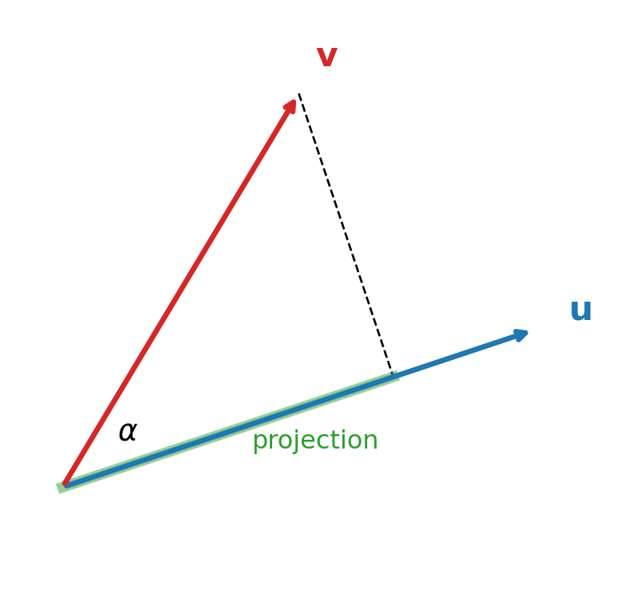
A norm measures the size of a vector. The family of \(\ell_p\) norms:
\[ \|\mathbf{u}\|_p = \Big(\sum_{j=1}^{d} |u_j|^p\Big)^{1/p} \]
The distance between two samples is the norm of their difference, \(\|\mathbf{x}_i - \mathbf{x}_k\|_p\).
Where we use them: the MSE is a squared \(\ell_2\) norm, \(\frac{1}{n}\|\mathbf{y}-\hat{\mathbf{y}}\|_2^2\); Ridge and Lasso penalise \(\|\mathbf{w}\|_2^2\) and \(\|\mathbf{w}\|_1\) (4a); kNN and clustering rely on distances (7b).
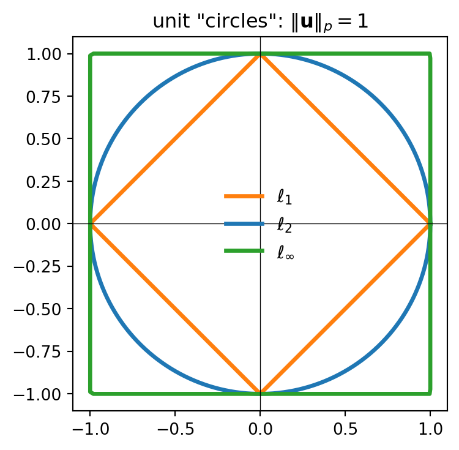
A matrix \(\mathbf{A} \in \mathbb{R}^{n \times d}\) has \(n\) rows and \(d\) columns. The product \(\mathbf{A}\mathbf{B}\) exists only if the inner dimensions match: \((n \times d)(d \times k) \rightarrow (n \times k)\).
Matrix-vector product. Each element is the dot product of a row with the vector. For a linear model, all the predictions at once:
\[ \hat{\mathbf{y}} = \mathbf{X}\mathbf{w} + b, \qquad \hat{y}_i = \mathbf{x}_i^T\mathbf{w} + b \]
Transpose. \((\mathbf{A}^T)_{ij} = A_{ji}\) and \((\mathbf{A}\mathbf{B})^T = \mathbf{B}^T\mathbf{A}^T\).
Symmetric matrices satisfy \(\mathbf{A} = \mathbf{A}^T\). For any data matrix, \(\mathbf{X}^T\mathbf{X}\) (\(d \times d\)) is symmetric: it appears in least squares (2b) and, for centred data, is proportional to the covariance matrix (5b).
Identity and inverse. \(\mathbf{I}\) has ones on the diagonal; a square matrix is invertible if there is \(\mathbf{A}^{-1}\) with \(\mathbf{A}^{-1}\mathbf{A} = \mathbf{I}\).
Rank and singularity. The rank is the number of linearly independent columns. If a column of \(\mathbf{X}\) is (close to) a combination of others, \(\mathbf{X}^T\mathbf{X}\) is (close to) singular and cannot be reliably inverted: this is multicollinearity, one of the motivations for regularisation (4a).
Note
In code we never compute \(\mathbf{A}^{-1}\) explicitly: np.linalg.solve(A, b) solves \(\mathbf{A}\mathbf{x} = \mathbf{b}\) faster and more accurately.
For a square matrix \(\mathbf{A}\), a non-zero vector \(\mathbf{v}\) is an eigenvector with eigenvalue \(\lambda\) if the matrix only stretches it, without changing its direction:
\[ \mathbf{A}\mathbf{v} = \lambda\mathbf{v} \]
For a symmetric matrix \(\mathbf{A} \in \mathbb{R}^{d \times d}\) (the case we will meet):
\(\mathbf{V}\) is an orthogonal matrix, \(\mathbf{V}^T\mathbf{V} = \mathbf{I}\): it represents a rotation (or reflection) and preserves lengths and angles.
Positive semi-definite (PSD) matrices satisfy \(\mathbf{u}^T\mathbf{A}\mathbf{u} \ge 0\) for every \(\mathbf{u}\), equivalently all \(\lambda_j \ge 0\). Covariance matrices, \(\mathbf{X}^T\mathbf{X}\) and kernel matrices are PSD.
Where we use them:
The gradient of a scalar function \(L(\boldsymbol{\theta})\) is the vector of its partial derivatives, and points in the direction of steepest increase:
\[ \nabla_{\boldsymbol{\theta}} L = \left[\frac{\partial L}{\partial \theta_1}, \frac{\partial L}{\partial \theta_2}, \dots\right]^T \]
A few rules cover almost everything in this course (\(\mathbf{a}\) and \(\mathbf{A}\) constant, \(\mathbf{A}\) symmetric):
| Function | Gradient w.r.t. \(\mathbf{w}\) | Used in |
|---|---|---|
| \(\mathbf{a}^T\mathbf{w}\) | \(\mathbf{a}\) | linear models |
| \(\|\mathbf{w}\|_2^2 = \mathbf{w}^T\mathbf{w}\) | \(2\mathbf{w}\) | Ridge (4a), SVM (6b) |
| \(\mathbf{w}^T\mathbf{A}\mathbf{w}\) | \(2\mathbf{A}\mathbf{w}\) | PCA (5b) |
| \(\|\mathbf{y} - \mathbf{X}\mathbf{w}\|_2^2\) | \(-2\mathbf{X}^T(\mathbf{y} - \mathbf{X}\mathbf{w})\) | least squares, gradient descent (2b) |
Setting the gradient to zero gives the stationary points; following \(-\nabla L\) is gradient descent.
import numpy as np
u = np.array([3.0, 1.0])
v = np.array([1.5, 2.5])
print("dot product u.v :", u @ v)
print("norms L2, L1 :", np.linalg.norm(u).round(3), np.linalg.norm(u, 1))
X = np.array([[1.0, 2.0],
[2.0, 1.0],
[3.0, 4.0]]) # n = 3 samples, d = 2 features
w = np.array([0.5, -1.0])
print("X @ w :", X @ w) # one prediction per sample
print("X.T @ X :\n", X.T @ X) # d x d, symmetric
lam, V = np.linalg.eigh(X.T @ X) # eigh: for symmetric matrices
print("eigenvalues :", lam.round(3))
print("V^T V = I ? :", np.allclose(V.T @ V, np.eye(2)))dot product u.v : 7.0
norms L2, L1 : 3.162 4.0
X @ w : [-1.5 0. -2.5]
X.T @ X :
[[14. 16.]
[16. 21.]]
eigenvalues : [ 1.122 33.878]
V^T V = I ? : TrueSuggested readings:
The different perspectives of Machine Learning are taken from Principles of Machine Learning; read chapters 1 and 2 for more details.
The three elements of Machine Learning methods are also discussed in the first chapter of Machine Learning Methods, an introduction to the main machine learning methods, covering both supervised and unsupervised learning.
Data preprocessing is discussed in more detail in chapter 3 of Machine Learning for Engineers.
The linear algebra used in the course is covered in chapters 2-5 of Mathematics for Machine Learning, freely available online.
Suggested activities:
describe, scatter plots, correlations) on one of the datasets proposed for CW1.
ENG4200 AI4